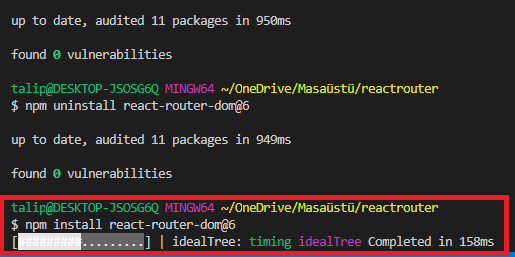
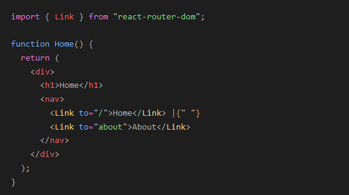

bir web uygulamasında dinamik yönlendirme uygulamanıza olanak tanır. Yönlendirmenin çalışan bir uygulamanın dışındaki bir konfigürasyonda işlendiği geleneksel yönlendirme mimarisinden farklı olarak, React Router DOM, uygulama ve platformun ihtiyaçlarına göre bileşen tabanlı yönlendirmeyi kolaylaştırır.
projemizde Terminale şu kodu Yazıyoruz;
npm install react-router-dom@6
{Link} etiketini import ettikten sonra yönlendirmek istediğimiz sayfayı Link formatında yazıyoruz..
